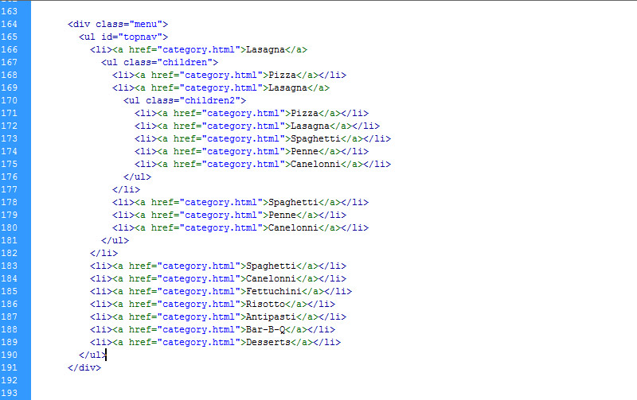
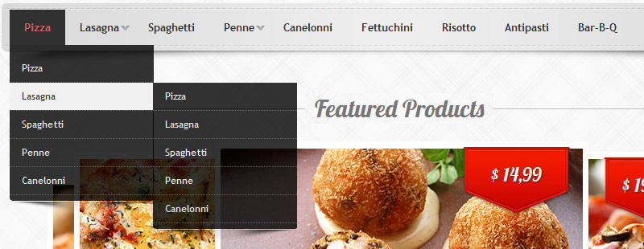
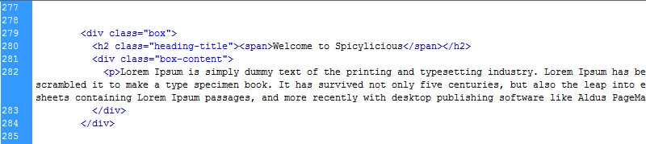
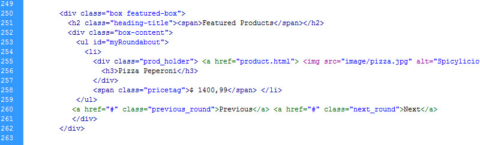
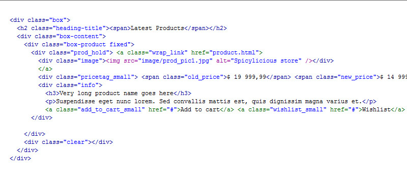
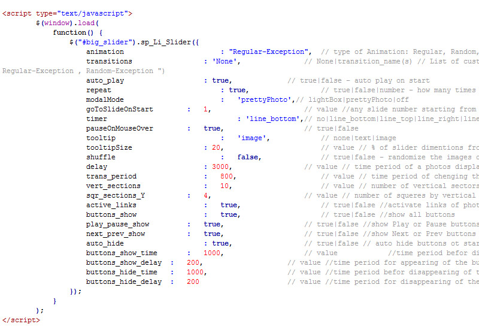
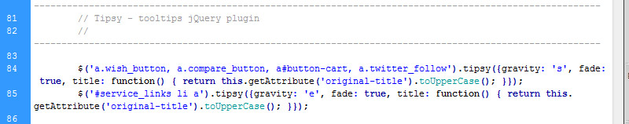

Created: 30/09/2011
By: Dimitar Koev/ the AlThemist
Email: office@mgdesign.eu
Thank you for purchasing my theme. If you have any questions that are beyond the scope of this help file, please feel free to email via my user page contact form here. Thanks so much!
Before we start, lets take a look on the folder structure of the theme. All theme files are placed in the HTML folder. The main HTML folder consists of 3 more folders for diferent types of theme assets:
This is an HTML theme and doesn't require instalation in the traditional meaning of the word. You only need to place the content (HTML files and the three folders) in your prefered web directory
Keep in mind that the folder structure and file/folder names are important for the correct theme work
The main HTML structure of the template consists of 4 main containers containing all page ellements:
All 4 containers are wrapped in one main div with ID #container
Every one of the main 4 containers have a full width and and a subcontainer with class .inner for the content
The header div contains all navigation ellements of the template:
The main menu is divided by two pieces for the left and right side of the logo. In order to achieve the centered effect, the left menu
if floated to the right and the right menu is floated to the left.Both parts are based on Unordered lists.
Every item in the main menu, could have a fading drop-down submenu. It is based on nested unordered lists and the fading effect for the submenu is controlled by JavaScript function.
The category menu is a 3 level drop-down menu powered by jQuery custom script. The menu is again based on Unordered list with nested list for the sub-menus. The structure of the menu is as follows:
Where "children" is a second level (sub-menu) and "children2" is a third level (sub-sub-menu) menu.
The drop down effect is again controlled by custom jQuery script.
Most of the page ellements are placed in a container div with class "box". The "box" container have two main parts: Heading title (h2 with a specific class assigned for the line effect) and the real container with class "box-content". All important parts of every page segment is placed within the "box-conten" div.
Example
Featured Roundabout slider
The featured slider is using a complex structure of html ellements powered by Roundbout JS script.
The slider is Unordered list and every product in it is wrapped in a list item "li". There are many relatively and absolute positioned ellements in every product contains, thus changes in the structure are not recommended.
Roundbout slider structure
The product listings in modules and category view are using a combination of complex HTML/CSS techniques and JavaScript. The products are presented by a picture with a pricetag, and hidden info pannel, visible on hover. The sliding effect of the info pannel is powered by custom jQuery script.
Here is the basic structure of the product listings:
All other page ellements are using the same principles except the JS functionality which will be explaned a bit later.
The theme comes with several CSS (stylesheet) files grouped in the stylesheet folder:
The main sections of the stylesheet.css are separated by comments and the classes are named with clear names for better understanding and easier navigation.
There are more plugin-speciffic CSS files in the "js" folder. These CSS files are critically important for the correct work of the plugins and changes in them are not recommended.
If you would like to edit or change any color, font, or style of any elements in the template, you must edit the general CSS file (stylesheet.css). If you would like to change the general color for links for example, you would cnahge the following:
a, a:visited {
color: #9D0043;
text-decoration: underline;
cursor: pointer;
}
If you find that your new style is not overriding, it is most likely because of a specificity problem. Scroll down in your CSS file and make sure that there isn't a similar style that has more weight.
e.g.
#header .div5 a.toplinks {
color: #7C7C7C;
float: left;
font-size: 14px;
margin-right: 2px;
padding: 10px 8px;
text-align: center;
text-decoration: none;
}
So, to ensure that your new styles are applied, make sure that they carry enough "weight" and that there isn't a style lower in the CSS file that is being applied after yours.
This template is heavili loaded with both custom JS functions and free jQuery plugins. All JS files are placed in a separate folder called "js". The list of files is as follows:
some of the jQuery plugins are heavily customized and chages in their files are not recommended.
All JS functions related to the theme content management are placed in custom_scripts.js or inline in the HTML files if required. The custom_scripts.js file is responsible for the main functions like menus, sliding effects, tooltips, image fading effects, and the SlideFeatures panel (Cart, Currency switcher, Language switcher, Search bar)
For example - If you would like to edit the speed of the sliding info pannel for the product listings, you would need to open custom.scripts.js and find lines 23-29:
$("div.prod_hold").hover(function () {
$('.info', this).css({visibility: "visible",display: "none"}).slideDown('normal'); //the speed could be 'normal', 'fast', 'medium' or 'slow'
}, function () {
$('.info', this).css({visibility: "hidden"});
});
If you would like to change the speed for the fading cart in header:
$("li.side_cart").hover(function () {
$('#cart', this).fadeIn(500); //speed of the fading effect in milliseconds
}, function () {
$('#cart', this).fadeOut(200); //speed of the fading effect in milliseconds
});
Controlling the Li slider:
The Li slider is advanced jQuery slider plugin with hundreds of options and more than 140 transitions. The call function must be placed in the "head" area of the HTML file:
The full list of options and features could be found here: - Li Slider
Roundabout Featured slider:
The roundabout Featured slider must be called with a JS function before the closing body tag. This is a customized variation of the default roundabout function and changes are not recommended. For the full information about Roundabout jQuery plugin, visit Roundabout project site by Fred LeBlanc
$(document).ready(function() {
var interval;
$('ul#myRoundabout')
.roundabout({
'btnNext': '.next_round', //the class of the HTML ellement used as button "next"
'btnPrev': '.previous_round' //the class of the HTML ellement used as button "previous"
}
)
.hover(
function() {
clearInterval(interval);
},
function() {
interval = startAutoPlay();
});
interval = startAutoPlay();
});
function startAutoPlay() {
return setInterval(function() {
$('ul#myRoundabout').roundabout_animateToPreviousChild();
}, 3000); // the pause between rotations
}
Accordions, Tabs and Toggles
Spicylicios theme is using a customized version of the jQuery UI library. The usage of tabs, toggles and accordions must be innitiated by JS function before the closing body tag:
Accordion
$(function() {
$( "#your-accordion-contaner-class-or-id" ).accordion({
autoHeight: false,
navigation: true
});
});
Tabs
$('#tabs-contaner-class-or-id a').tabs();
Toggle
$('.toggle-heading-class-or-id').bind('click', function() {
if ($(this).hasClass('active')) {
$(this).removeClass('active');
} else {
$(this).addClass('active');
}
$(this).parent().find('.toggle-content-class-or-id').slideToggle('slow');
});
Tooltips
This theme is using the "Tipsy" jQuery plugin. If you want to add a tooltip to any ellement, you only need to put the tip content in the ellement's title tag and add the ellement class in the tooltip function in custom_scripts.js - line 84.
For more options and advanced use of the Tipsy plugin, visit the oficial page at jquery.com
The template comes with 14 customizable layered PSD files as follows:
I've used the following images, icons or other files as listed.
Once again, thank you so much for purchasing this theme. As I said at the beginning, I'd be glad to help you if you have any questions relating to this theme. No guarantees, but I'll do my best to assist. If you have a more general question relating to the themes on ThemeForest, you might consider visiting the forums and asking your question in the "Item Discussion" section.
Dimitar Koev, metaGraphics Design Studio